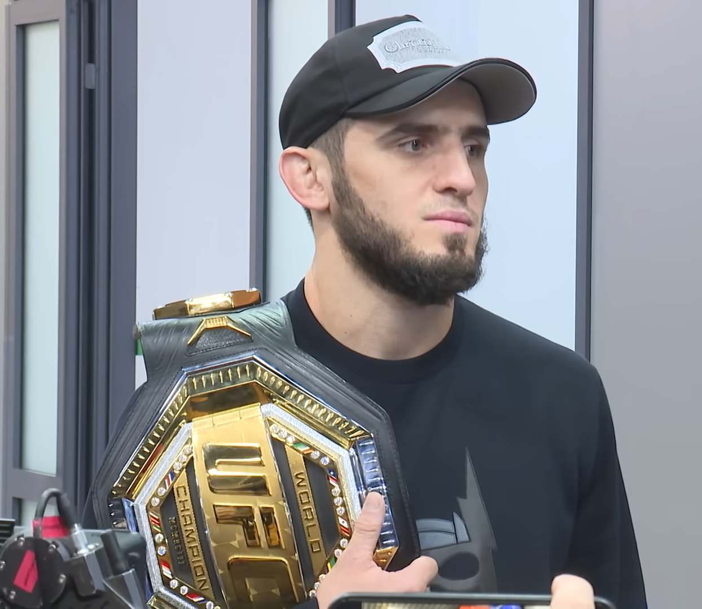

O UFC 330 promete ser um dos eventos mais importantes deste segundo semestre. Neste sábado, 15 de agosto de 2026, o Ultimate desembarca na Xfinity Mobile Arena, na Filadélfia, nos Estados Unidos, para um card com duas disputas de cinturão, uma possível marca histórica e sete representantes do Brasil distribuídos ao longo da programação.
Na luta principal, Makhachev coloca o cinturão dos meio-médios em jogo contra Ian Machado Garry, atual desafiante número 1 da categoria. O russo chega com cartel de 28 vitórias e apenas uma derrota, enquanto o irlandês soma 17 triunfos e um revés. Mais do que a manutenção do título, o campeão entra no octógono com a possibilidade de conquistar a 17ª vitória consecutiva no UFC e estabelecer um novo recorde absoluto de triunfos seguidos na organização, superando a marca de Anderson Silva.
O card principal ainda terá Mackenzie Dern x Gillian Robertson pelo cinturão peso-palha feminino.
Makhachev busca primeira defesa do cinturão
Islam Makhachev chega ao UFC 330 em uma posição diferente daquela que marcou boa parte de sua trajetória no Ultimate. Ex-campeão dos leves, o russo conquistou também o título dos meio-médios e fará neste sábado sua primeira defesa do cinturão da categoria até 77 kg.
A luta também pode acrescentar um capítulo importante à história do UFC. Makhachev tem 16 vitórias consecutivas na organização. Caso derrote Ian Machado Garry, chegará à 17ª e ultrapassará Anderson Silva na lista das maiores sequências de vitórias da história do Ultimate.
O desafio, porém, apresenta características diferentes das enfrentadas pelo russo durante boa parte de sua passagem pelo peso-leve. Garry é consideravelmente maior: 1,91 m de altura e 1,89 m de alcance para o irlandês, contra 1,78 m e 1,79 m, respectivamente, de Makhachev. A diferença física será um dos componentes mais interessantes de uma luta que coloca frente a frente um campeão conhecido pela eficiência no grappling e um desafiante que terá vantagem de tamanho e alcance.
A Irlanda novamente no topo do UFC
Ian Machado Garry chega à primeira posição entre os desafiantes dos meio-médios com apenas uma derrota em 18 lutas profissionais. Aos 28 anos, ele terá a oportunidade de se tornar o segundo irlandês campeão do UFC, depois de Conor McGregor.
O confronto também representa uma mudança de patamar para o irlandês. Garry vem de vitória por decisão unânime sobre Belal Muhammad e agora encara um campeão que não perde no UFC há 16 combates.
A diferença de estatura e alcance coloca uma questão tática evidente para o duelo: quanto tempo Garry conseguirá manter Makhachev distante e quanto o campeão será capaz de reduzir os espaços para impor seu jogo? É justamente esse choque de características que transforma a luta principal em um dos confrontos mais relevantes do fim de semana esportivo.
Os dois passaram pela balança nesta sexta-feira, 14 de agosto. Makhachev marcou 170 libras, mesmo peso registrado por Garry, deixando oficialmente confirmada a disputa pelo cinturão dos meio-médios.
Primeira defesa do cinturão peso-palha
A segunda disputa de título da noite coloca Mackenzie Dern diante de Gillian Robertson. A campeã fará a primeira defesa do cinturão peso-palha do UFC, enquanto Robertson chega ao title shot embalada por cinco vitórias consecutivas.
As duas também cumpriram o limite de campeonato na pesagem oficial desta sexta-feira. Dern e Robertson registraram 115 libras, confirmando a luta co-principal.
O confronto chama atenção especialmente pelo nível das duas competidoras no grappling. Dern construiu sua carreira esportiva a partir de uma trajetória de alto nível no jiu-jítsu, enquanto Robertson acumulou finalizações importantes dentro do UFC.
Para Dern, o UFC 330 marca a passagem de desafiante a campeã que precisa defender a posição. Para Robertson, será a oportunidade de transformar a sequência de cinco vitórias no maior resultado de sua carreira no Ultimate.
Brasil terá forte presença no UFC 330
O card oferece diversos motivos para o público brasileiro acompanhar o evento desde as primeiras lutas.
Kauê Fernandes ganhou espaço no card principal e enfrenta Jalin Turner pelo peso-leve. Fernandes chega ao confronto com cartel profissional de 11 vitórias e duas derrotas, enquanto Turner tem 15 triunfos e nove reveses. Os dois bateram 156 libras na pesagem.
Edson Barboza também estará no card principal. Um dos brasileiros mais experientes em atividade na organização encara o argentino Esteban Ribovics em duelo pelo peso-leve. Barboza aparece com cartel de 24-14, enquanto Ribovics soma 15-3. Ambos registraram 156 libras nesta sexta-feira.
No preliminar, Vicente Luque enfrenta Tresean Gore em combate pelo peso-médio. Luque marcou 186 libras, assim como Gore, e chega ao evento com cartel de 24 vitórias, 12 derrotas e um empate.
Eduardo Chapolin também representa o Brasil diante de Charles Johnson, em luta combinada em 130 libras. Os dois marcaram 129,5 libras. Já nas primeiras preliminares haverá um duelo brasileiro entre Rafael Tobias e Lucas Fernando.
Card completo do UFC 330
Lutas principais — a partir das 22h
- Islam Makhachev x Ian Machado Garry — cinturão dos meio-médios
- Mackenzie Dern x Gillian Robertson — cinturão peso-palha feminino
- Jalin Turner x Kauê Fernandes — peso-leve
- Mansur Abdul-Malik x Dustin Stoltzfus — peso-médio
- Edson Barboza x Esteban Ribovics — peso-leve
Card preliminar — a partir das 20h
- Chidi Njokuani x Joel Álvarez — peso-meio-médio
- Charles Johnson x Eduardo Chapolin — peso combinado
- Donte Johnson x Eric McConico — peso-médio
- Vicente Luque x Tresean Gore — peso-médio
Primeiras preliminares — a partir das 18h30
- Rafael Tobias x Lucas Fernando — peso-meio-pesado
- Neil Magny x Ramiz Brahimaj — peso-meio-médio
- Jeremiah Wells x Myktybek Orolbai — peso-meio-médio
Todos os 24 atletas programados passaram pela pesagem, mantendo as 12 lutas previstas para o evento.
Onde assistir ao vivo
Para o Brasil, as primeiras preliminares estão previstas para 18h30, o bloco seguinte começa às 20h e o card principal terá início às 22h, sempre pelo horário de Brasília.
A transmissão será pelo Paramount+. A plataforma informa que todo o evento estará disponível no serviço, incluindo as preliminares e o card principal.
Um sábado que pode entrar para a história
O UFC 330 reúne ingredientes suficientes para transformar o evento em uma das noites mais relevantes da temporada. Makhachev não estará defendendo apenas seu cinturão: uma vitória pode colocá-lo sozinho no topo de uma das estatísticas mais simbólicas da história da organização. Garry, por outro lado, tem a oportunidade de derrubar um dos lutadores mais dominantes de sua geração e devolver à Irlanda um campeão do UFC.
A disputa entre Mackenzie Dern e Gillian Robertson acrescenta um segundo cinturão ao card, enquanto a presença de Kauê Fernandes, Edson Barboza, Vicente Luque e outros representantes brasileiros amplia o interesse para o público nacional.
Depois de um ano que também teve um card de enorme repercussão no UFC na Casa Branca, o Ultimate chega a mais uma noite de forte apelo em 2026. Desta vez, os holofotes estarão sobre a Filadélfia e sobre uma pergunta que só será respondida dentro do octógono: Islam Makhachev terminará o sábado ainda campeão e como novo dono da maior sequência de vitórias da história do UFC